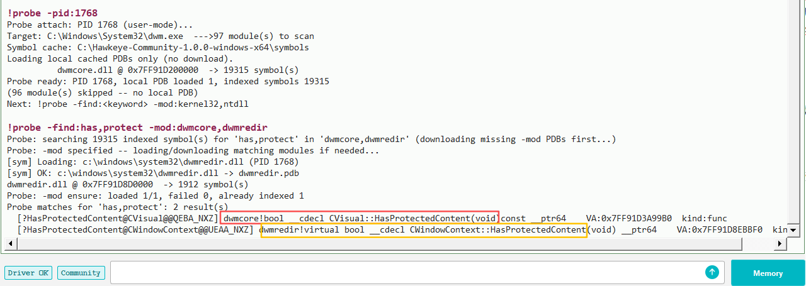
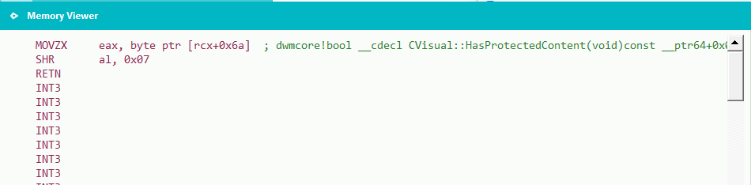
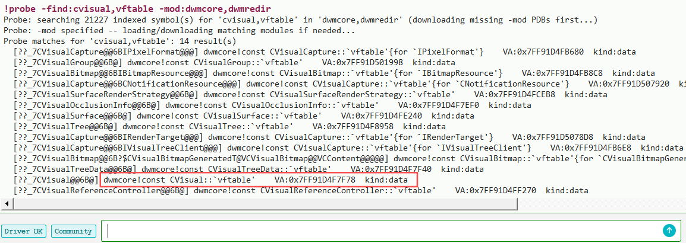
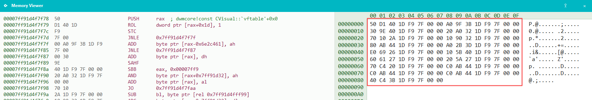
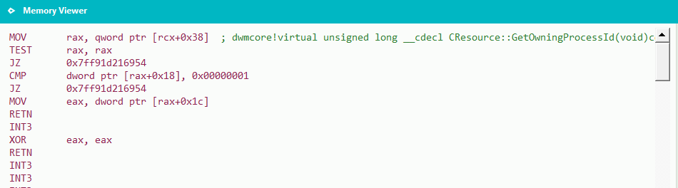

Unlike DisplayAffinity, that path centers on the CWindowContext object; Visual-layer
details live on composition nodes in dwmcore (CVisual).
2. What is a Visual?
Before diving in, I think it’s worth a quick intro to what a Visual is:
DWM maintains a global Visual tree in dwm.exe / dwmcore.dll. Each
CVisual on the tree is a composition node; many top-level windows map to a subtree
in this global Visual tree — the subtree root is often tied to an HWND, and
child visuals underneath describe what that window looks like on the desktop. DWM blends these
visuals into the final desktop frame based on window Z-order, node hierarchy, occlusion, and
various flags. What you see on the monitor is essentially the result of how this global Visual
tree is merged and trimmed.
So the smallest unit DWM actually manages is the Visual, not the window.
3. A fragile model: cross-process Visuals & window_hijack
As above, DWM cares more about Visuals than about which window or process owns them.
The window_hijack source shows that fusing a Visual you created in one
process into another process’s window boils down to just a few checks. The logic lives in:
Once past that gate, the system keeps working happily as if nothing happened — it
never re-validates whether a Visual is abnormal.
4. CVisual hiding & HasProtectedContent
After digging into dwmcore, we find that each Visual maps to a
CVisual object. CVisual derives from CResource.
CWindowNode is a subclass of CVisual used for subtree-root
visuals bound to a window handle.
Drawing on part 1, we try:

Figure 1. !probe -find:has,protect -mod:dwmcore,dwmredir — the same name appears in both dwmredir and dwmcore.
As shown above, a Hawkeye joint search finds not only a match in dwmredir,
but also an equally eye-catching namesake in dwmcore:
CWindowContext::HasProtectedContent (dwmredir)
CVisual::HasProtectedContent (dwmcore)
Microsoft really seems committed to keeping things out in the open.
Disassembly of dwmcore!CVisual::HasProtectedContent is straightforward:

Figure 2. Load [rcx+0x6A], SHR 7, return — i.e. test bit 7 of that byte.
Drawing on part 1, it is easy to guess that bit 7 at offset +0x6A on a
CVisual object is the key flag.
When locating CVisual instances, the first 8 bytes should theoretically be
the CVisual vtable pointer (example from our test machine below):

Figure 3. !probe -find:cvisual,vftable -mod:dwmcore — locate the CVisual vftable.
On our test machine the vtable pointer is at 0x7FF91D4F7F78.

Figure 4. Vftable address in dwmcore.dll — use it to scan objects on the DWM heap.
Searching for that value in CE confirms that the first 8 bytes of a CVisual
object are indeed its vtable pointer, and that bit 7 at offset +0x6A is the
anti-capture protection flag.
That still is not quite enough. In part 1 we got PID, window handle, and even window
size (with a bit more digging). A Visual gives you less out of the box — or if you
want more, you need to plan for compatibility work.
Can we get a window handle from a Visual?
Yes. As noted above, if the Visual is a subtree root you can read it directly — see
CVisual::GetHwnd. If it is a child node, you have to walk up to a parent
until one of them is a subtree root, then call CVisual::GetHwnd for the
window handle. Compatibility issues here are real.
Disassembly of dwmcore!CResource::GetOwningProcessId:

Figure 6. Handle at visual+0x38; when valid, PID at handle+0x1C.
The logic is straightforward. For compatibility, resolve offsets from instructions
dynamically rather than hard-coding them.
Once a suspicious Visual maps to a PID, the full investigation path is complete.
5. Open-source note
Part 1’s DisplayAffinity detection is fully open-sourced in Hawkeye Community
(!hidden_windows). Visual-layer detection is still a narrower research topic,
and the corresponding approach is not open-sourced in Community yet. The toolchain used
in this article —
!probe, symbol loading, and memory analysis — remains available in
Community for readers who want to reproduce the steps above on their own machine.